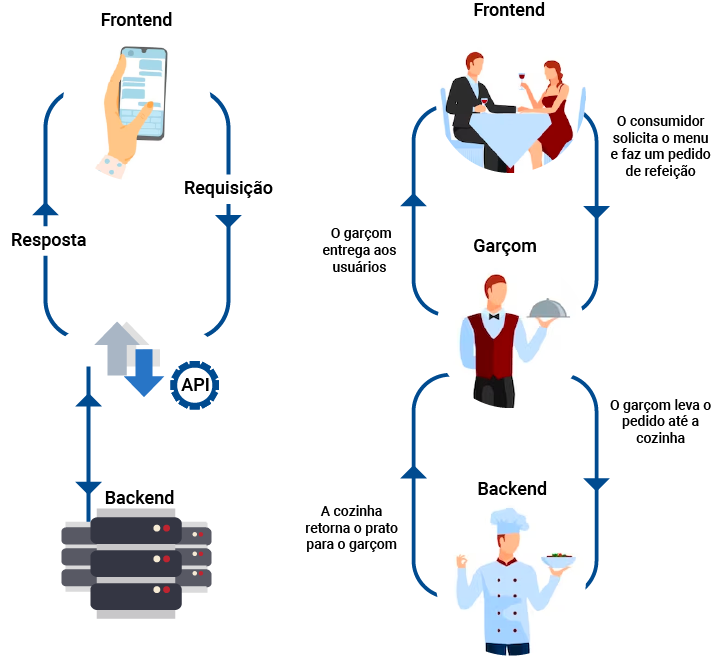
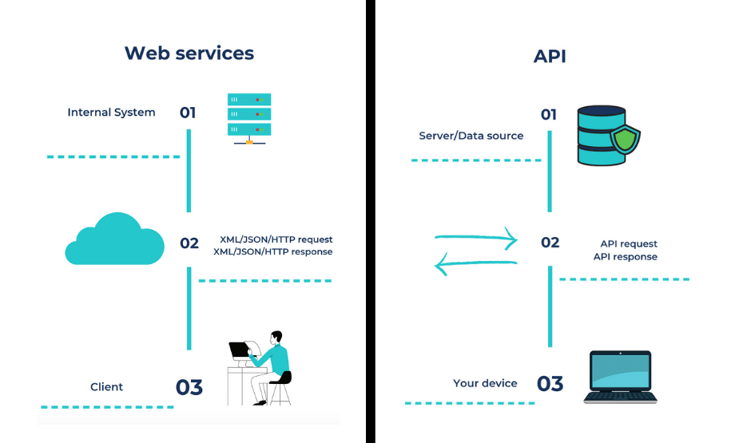
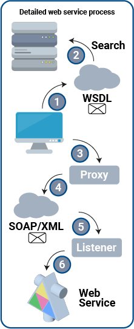
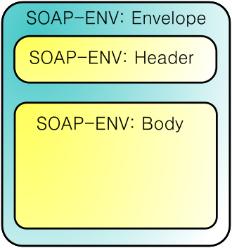
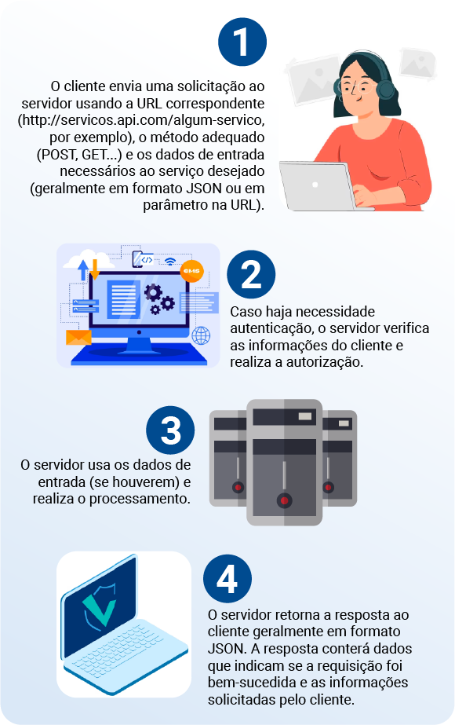
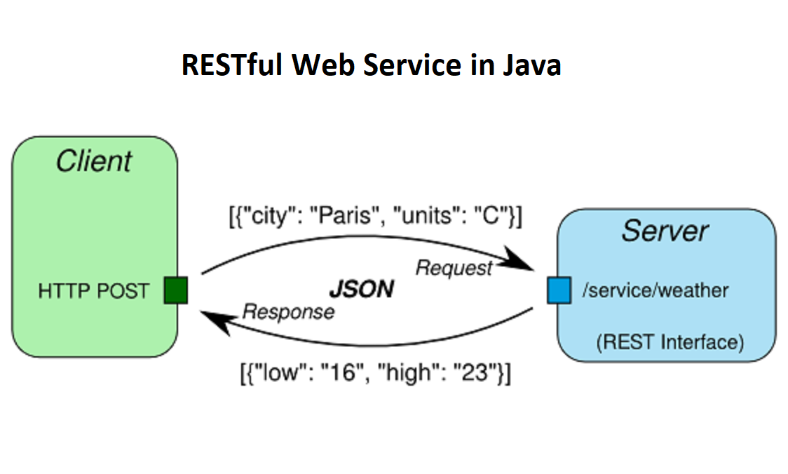
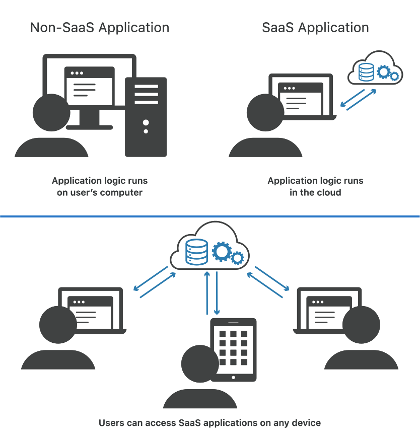

Como sugestão, configure a opção de leitura de caracteres e de pontuação de seu leitor de tela para o grau máximo de leitura, a fim de que os códigos disponibilizados neste material sejam lidos corretamente. No caso do NVDA (NonVisual Desktop Access), para localizar a opção Grau de pontuação/símbolos, acesse Preferências – Configurações – Fala. Altere o padrão Pouco para Tudo. Dessa forma, o leitor passará a ler os segmentos de código em sua totalidade.
Os conteúdos abordados neste material visam auxiliá-lo na compreensão do que é uma API e um web service, junto de outros temas intrinsecamente conectados, como protocolos de comunicação, padrões de desenvolvimento de APIs, a popular estruturação JSON e os tão utilizados SAAS, consumidos com frequência no cotidiano. Por meio deste conteúdo, você estará mais preparado para posteriormente seguir para a parte prática do uso de um web service em seu sistema. Bons estudos!
Na área da programação, muito se fala sobre uso de APIs e de web services. Essas duas tecnologias se tornaram fundamentais para o desenvolvimento da maioria dos sistemas utilizados atualmente, especialmente se tratando de software web e mobile.
Pode-se definir uma API (Application Programming Interface) como uma interface que permite a comunicação entre dois sistemas diferentes. Em sua estrutura, a API é composta por conjuntos de rotinas e padrões preestabelecidos, que permitem acesso às funcionalidades de outros sistemas. Para exemplificar, é possível utilizar uma popular analogia a um restaurante: quando você está em uma mesa de restaurante (Sistema A), você fará um pedido para o garçom. Quando o pedido estiver definido, o garçom realizará a solicitação na cozinha (Sistema B, servidor), passando suas especificações sobre os pratos escolhidos. Quando a cozinha retornar os pedidos realizados, o garçom levará suas solicitações até sua mesa. Se você quiser pedir mais bebidas, esse processo ocorrerá também por meio do garçom. Nesse contexto, o garçom é quem realiza toda a comunicação e as operações necessárias entre você e a cozinha para que os processos ocorram com sucesso. O garçom é o equivalente à API, realizando a comunicação entre o sistema A e o sistema B. O sistema A não precisa saber como o garçom (API) faz a solicitação no sistema B nem como o sistema B faz o retorno, só precisa saber como realizar o pedido.

Figura 1 – Analogia entre uma API e um restaurante
Fonte: Kothalawala (2018)
Comparação entre uso de API em um sistema e um Restaurante. Na primeira parte, um sistema mobile (front-end) faz uma requisição para uma API. A API comunica-se com o servidor (sistema back-end). O servidor retorna uma resposta para a API, ao qual é repassada para a aplicação mobile. Na segunda parte, os consumidores de um restaurante são vinculados como equivalentes ao front-end, usuários. O consumidor solicita o menu e faz um pedido de refeição. O garçom, equivalente à API, leva o pedido até a cozinha, equivalente ao servidor back-end. A cozinha retorna o prato para o garçom, que entrega aos usuários.
As APIs são interfaces elaboradas com o objetivo de simplificar o desenvolvimento de programas e aplicações por meio da abstração de diversos elementos que compõem um software. O desenvolvedor não precisa saber como a API executará os serviços propostos, apenas como ele deve utilizá-los, conforme haja necessidade de vincular a seu próprio projeto.

É importante destacar que, embora existam padrões gerais, as APIs costumam ter seus próprios guias de orientação de uso. Verifique, sempre que possível, a documentação da API que deseja explorar para checar quais são as formas de integração e os exemplos de representação de dados.
O conceito-base de um web service é muito similar ao conceito de uma API, pois o web service também objetiva realizar conexão entre diferentes aplicativos de software. O que diferencia um web service de uma API é a forma como as requisições são feitas. Um web service obrigatoriamente tem suas requisições executadas em rede, porém não é obrigatório que toda API utilize requisições por rede. Se uma API utilizar requisição por rede, ela é então um web service. Dessa forma, pode-se concluir que todo web service é uma API, porém nem toda API se trata de um web service.

Figura 2 – Comparação entre requisições por meio de web services e APIs
Fonte: Kitrum (2020)
Duas ilustrações, à esquerda, web services é apresentado ao cliente (usuário/front-end) realizando requisições XML/JSON. As requisições são feitas na nuvem, comunicando-se com o sistema interno solicitado. À direita, API é apresentado com acesso sendo realizado pelo seu dispositivo, realizando uma requisição diretamente à API, obtendo dados de sua fonte de dados/servidor. Após a obtenção de dados ou execução de procedimentos, a API retorna a resposta para o seu dispositivo.
Um web service funciona por meio de mensagens de requisição e resposta HTTP (GET, POST, PUT, DELETE), em que os dados são normalmente apresentados nos formatos XML ou JSON. O uso de web services ou APIs web tem sido fundamental não só para sistemas desktop e sistemas web, mas especialmente sistemas mobile, em que a interface gráfica e algumas funcionalidades são executadas no aparelho, mas que boa parte das funcionalidades é realizada por chamadas na web e executadas em um servidor. É o caso dos aplicativos de transporte e das redes sociais e de delivery, apenas para citar alguns.
Outro aspecto importante que pode ser destacado são os microsserviços, que se tratam de vários serviços e funcionalidades desenvolvidos de forma individual, funcionando de forma independente, facilitando a manutenção de código e ampliando a possibilidade de tecnologias utilizadas em cada microsserviço.
Um exemplo de web service muito utilizado atualmente é o AWS (Amazon Web Services), que abrange uma vasta área de setores de atuação, proporcionando soluções tecnológicas para desenvolvedores de softwares, publicidade e marketing, setores financeiros, tecnologia em jogos e outras diversas áreas e subáreas.
Pode-se dizer que um projeto de web service é um tipo de aplicação web, no entanto, normalmente, uma aplicação web envolve mais elementos, como páginas e estilização, não presentes nos web services.
Com o Spring MVC, você pode criar aplicações web completas, contando com back-end e front-end. Web services, por outro lado, apesar de também poderem ser criados com Spring, não contarão com a camada de visão.
Devido aos web services e as APIs realizarem a comunicação entre sistemas, nem sempre o sistema cliente e servidor terão a mesma linguagem de programação. Dessa forma, foi necessário desenvolver uma linguagem de protocolos para transmitir informações de uma ponta (cliente) a outra (servidor). Com base nesse cenário, uma das primeiras formas de comunicação para padronizar a forma de envio e leitura de dados foi o protocolo SOAP.

Figura 3 – Processo do uso de um web service através do protocolo SOAP
Fonte: Computing and Software Wiki McMaster University (2008)
Ilustração de uma pesquisa sendo realizada no UDDI através de uma pesquisa por WSDL. O WSDL mantém as informações sobre o web service que será utilizado, repassando as informações ao cliente, que pode realizar uma requisição SOAP por XML. A requisição chega ao web service, que responde de acordo com a requisição realizada.
Criado no ano 2000, o protocolo SOAP (Simple Object Access Protocol) popularizou-se como uma recomendação pela W3C (World Wide Web Consortium, organização de desenvolvimento de padrões web) de utilização para desenvolvimento de web services. Utiliza o XML (Extensible Markup Language) como formato-padrão para a transferência de objetos entre aplicações. Existem alguns componentes importantes nesse processo de comunicação entre sistemas. Veja a seguir:
A partir do UDDI, então se descobre o serviço, e pelo WSDL, se verifica a interface. A partir dessas informações, pode-se montar uma chamada SOAP, montando um documento XML com os dados necessários e transmitindo pela rede.

Figura 4 – Representação da estrutura SOAP utilizada para comunicação com o web service
Fonte: Wikipédia (2021)
Representação de uma estrutura “SOAP-ENV:Envelope”, agrupando a estrutura “SOAP-ENV: Header” e a estrutura “SOAP-ENV: Body”.
Embora o protocolo SOAP tenha se tornado popular em seu surgimento, com a chegada da arquitetura REST e dos arquivos JSON, que apresentam uma estruturação mais rápida e leve, o protocolo SOAP tem sido abandonando, sendo utilizado com maior frequência em projetos mais antigos ou que necessitem de características específicas que só podem ser encontradas no XML.
A arquitetura REST (Representational State Transfer), embora seja comparada com protocolos de envio de dados, não é um protocolo de envio de dados, mas sim um conjunto de restrições e conceitos a serem aplicados para a criação de um tipo especial de serviços web/API, denominados “Web Services/API RESTful”. Ou seja, um “Web Service/API” que aplica os padrões REST se torna um “Web Service/API RESTful”.
O uso de API RESTful é semelhante à navegação pela internet, com a diferença de que o acesso não é feito por navegador, e sim pelo próprio código da aplicação que está usando o recurso. O primeiro ponto a se observar é que os desenvolvedores da API precisam disponibilizar documentações de como usar os serviços, informando endereço, métodos de autenticação, quando necessário, e dados de entrada para cada serviço. As etapas gerais de uma chamada RESTful são:

Figura 5 – Como funciona uma API RESTful
Fonte: Howie Mann (2023)
À esquerda, há um computador com rótulo “Cliente”, com uma seta à direita com um retângulo escrito “HTTP” e abaixo dele “GET, POST, DELETE, PUT”; à direita, outro retângulo escrito “URL” com o texto abaixo: “/surveys, /surveys/123, /surverys/123/resp ...”. A seta segue à direita até um ícone de servidor com o rótulo “Server”. Deste sai uma seta com rótulo “JSON” de volta para o computador à esquerda. Abaixo de JSON, há: {survey_id: 123, score: 9, message:”amaze...”, response_id:4 }.
A vantagem do REST sobre web services com SOAP é que a transação é muito simplificada, sem necessidade de trocas sucessivas de definições XML. Basta que o cliente saiba o endereço e os dados de entrada de um serviço. Ao todo, são considerados seis itens como padrão para definir uma API como RESTful. Veja a seguir:
Interface Uniforme
Indica que o servidor transfere informações em um formato-padrão. As solicitações devem identificar recursos e enviar dados no formato definido (geralmente XML ou JSON). A resposta do servidor deverá ser no mesmo formato. Também devem ficar devidamente estabelecidos quais dados de entrada o serviço espera.
Cliente-Servidor
É recomendado que haja uma separação entre cliente e servidor, proporcionando independência a ambas as partes e fazendo com que a única informação que o cliente saiba seja a requisição, sem lidar diretamente com o servidor. Da mesma forma, o servidor não deverá poder manipular o cliente, somente passar dados através do HTTP. Essa organização facilita a possibilidade de portabilidade do sistema.
Comunicação stateless
Cada requisição feita pelo cliente deve conter toda a informação necessária para completar a requisição que foi realizada. Não deve ser possível reaproveitar dados armazenados anteriormente no servidor. Lembre-se de que o HTTP, por sua definição, não guarda dados da requisição anterior.
Dados em cache
A memória cache serve para um armazenamento temporário e de rápido acesso em caso de necessidade e pode ser aplicada ao processamento de um serviço.
Sistema em camadas
Separar em camadas divide as responsabilidades do sistema. Pode-se, por exemplo, projetar um serviço RESTful com camadas de segurança e lógica de negócio, por exemplo, interagindo uma com a outra, mas cada uma cuidando apenas de sua própria responsabilidade.
Código sob demanda
O retorno dado por uma API normalmente trata-se de recursos estáticos, entretanto, em alguns casos, sob demanda, poderá retornar um código executável (como Java applets, javascript etc.) para o cliente executar. Sendo sob demanda, é uma característica opcional dessa listagem de padrões.
Com a popularização da estrutura REST, embora também seja ainda possível utilizar XML, tornou-se mais comum o uso do JSON para a manipulação de dados. Conheça a seguir um pouco mais dessa tecnologia.
O JSON (JavaScript Object Notation) é um formato de textos com uma estruturação-padrão para representar dados, com base na sintaxe de objeto javascript, de modo a representar os dados em uma forma comum para todas as linguagens de programação, logo, esse formato de texto é independente de linguagens de programação para sua interpretação, sendo um padrão autodescritivo e de fácil entendimento para todos que analisarem o código. O arquivo conterá somente texto e sua extensão será “.json”. Sua utilização se aplica à transmissão de dados (enviar dados do servidor para o cliente para que possam ser manipulados em uma página da web, ou vice-versa). Como é um recurso muito usado em serviços RESTful, estude ou reveja esse formato a seguir.
A sintaxe básica obedece a dois princípios:
Veja um exemplo da representação JSON de um objeto com dados de cliente de uma biblioteca:
{
"Cliente": "Leticia Soares",
"Endereco": "Rua Alameda das Rosas 314",
"LivrosPendentes": 2
}
Nesse trecho, percebe-se que:
Com esse exemplo, você é capaz de desenvolver estruturas simples de dados.
Agora expanda as informações de sua cliente! Acrescente dados. Serão definidas mais algumas informações, pois será criada uma lista de telefones para contato.
Imagine que você queira incluir uma lista de telefones para seu cliente. Pode-se criar uma lista (array/vetor), considerando alguns aspectos:
{
"Cliente": "Leticia Soares",
"Endereco": "Rua Alameda das Rosas 314",
"LivrosPendentes" : 2,
"Telefone" : ["(00)00000-0000", "(99)99999-9999"]
}
Um objeto pode carregar como propriedade outro objeto. Imagine que, no caso de um endereço, você quisesse representar com atributos de rua, número e bairro. Poderia ter algo como a seguir:
{
"Cliente": "Leticia Soares",
"Endereco": {
"Rua": "Alameda das Rosas",
"Numero": 314
"Bairro": "Santa Maria"
}
"LivrosPendentes" : 2,
"Telefone" : ["(00)00000-0000", "(99)99999-9999"]
}
Imagine agora que você quer manter uma lista com o histórico de retiradas de livro do cliente da biblioteca. Cada retirada tem um conjunto de informações. Isso pode ser representado como uma lista de objetos:
{
"Nome": "Leticia Soares",
"Endereco": {
"Rua": "Alameda das Rosas",
"Numero": 314
"Bairro": "Santa Maria"
}
"LivrosPendentes" : 1,
"Telefone" : ["(00)00000-0000", "(99)99999-9999"],
"HistoricoRetiradas" : [
{
"NomeLivro" : "Os tres porquinhos",
"DataDevolucao" : "2025-03-22",
"StatusDevolucao" : "Devolvido"
},
{
"NomeLivro" : "A menina que roubava livros",
"DataDevolucao" : "2025-04-25",
"StatusDevolucao" : "Pendente"
}
]
}
Observe que, nesse código, a estruturação do objeto inserido dentro da array segue o mesmo padrão de estruturação de todas as outras combinações de atributo/valor.
Quando são poucos os dados que precisam ser manipulados, é fácil analisar possíveis erros de código e ajustes necessários na estrutura, entretanto, conforme o código ganha proporções maiores, pode ser um tanto quanto difícil encontrar erros em detalhes. Nesses casos, uma alternativa para otimizar seu processo de desenvolvimento é utilizar validadores de código JSON, como os sites JSON Formater & Validator e o JSON Lint, por exemplo. Existem diversos sites que auxiliam no processo de validação e, muitas vezes, também auxiliam na visualização da estrutura de forma mais organizada. Faça você mesmo alguns testes de validação com os códigos de exemplo disponibilizados no material!
Ainda que a estruturação tenha sua complexidade aumentada em determinados contextos, ainda é possível afirmar que é uma formatação mais simples e rápida em relação ao XML. Veja nos exemplos a seguir:
{
"Emprestimos" : [
{
"Nome": "Leticia Soares ",
"Endereco": "Avenida Alameda das Rosas 314",
},
{
"Nome": "Vanessa da Silva",
"Endereco": "Rua Exemplar dos Exemplos 1001",
},
{
"Nome": "João Pedro Tavares",
"Endereco": "Rua José Bonifácio 380",
}
]
}
<emprestimos>
<cliente>
<nome>Leticia Soares</nome><endereco>Avenida Alameda das Rosas 314</endereco>
</cliente>
<cliente>
<nome>Vanessa da Silva</nome><endereco>Rua Exemplar dos Exemplos 1001</endereco>
</cliente>
<cliente>
<nome>João Pedro Tavares</nome><endereco>Rua José Bonifácio 380</endereco>
</cliente>
</emprestimos>
{
"Emprestimos" : [
{
"Nome": "Leticia Soares ",
"Endereco": "Avenida Alameda das Rosas 314",
},
{
"Nome": "Vanessa da Silva",
"Endereco": "Rua Exemplar dos Exemplos 1001",
},
{
"Nome": "João Pedro Tavares",
"Endereco": "Rua José Bonifácio 380",
}
]
}
<emprestimos>
<cliente>
<nome>Leticia Soares</nome><endereco>Avenida Alameda das Rosas 314</endereco>
</cliente>
<cliente>
<nome>Vanessa da Silva</nome><endereco>Rua Exemplar dos Exemplos 1001</endereco>
</cliente>
<cliente>
<nome>João Pedro Tavares</nome><endereco>Rua José Bonifácio 380</endereco>
</cliente>
</emprestimos>
Comparando o JSON e o XML lado a lado, é possível perceber que existe uma maior simplicidade no JSON. A leitura e a manipulação de dados acontecem mais rapidamente, sendo, portanto, uma forma que recentemente tem sido muito utilizada na hora de transmitir grandes volumes de dados. Veja como ocorre essa requisição:

Figura 6 – Comunicação entre cliente e servidor utilizando arquivo JSON para requisição e resposta
Fonte: Javarevisited (2018)
Cliente faz uma requisição HTTP POST enviando como informação a cidade Paris e a unidade de temperatura C. A requisição chega ao servidor (interface REST) pelo caminho “/servico/clima” e retorna como resposta ao cliente o arquivo JSON contendo informações sobre temperatura mínima de 16 e máxima de 23.
Embora o JSON tenha muita popularidade, é sempre necessário analisar o contexto em que seu projeto está inserido. Se você tem um projeto que já utiliza corretamente requisições SOAP, trabalha com validações complexas e uso de recursos encontrados somente em XML, talvez não seja o ideal realizar uma troca de estruturação, pois precisaria de muitas adaptações, por exemplo. Em contrapartida, se você está desenvolvendo um site com manipulação frequente de um grande número de dados, o JSON pode se encaixar melhor devido a sua praticidade. Sempre observe o contexto!

Pesquise APIs RESTful gratuitas e abertas na internet e verifique formas de testá-las, seja por meio do navegador, seja por ferramentas como o Postman, abordado no conteúdo “Linguagem de Programação”. Quando houver entrada e saída de dados por JSON, observe com atenção a estrutura necessária desses dados.
SaaS (Software as a Service, ou Software como serviço) é um modelo de software baseado em nuvem que disponibiliza aplicações aos usuários por meio de um navegador da internet. Nessas circunstâncias, o serviço é hospedado de forma que seja possível realizar acesso na aplicação sob demanda, sem necessidade de instalações nem qualquer outra possível configuração nos computadores dos clientes. Para o usuário final, a utilização de um SaaS é atrativa, pois não é necessário se preocupar sobre como o serviço é mantido ou como a infraestrutura é gerenciada. O foco principal estará em como usar o software. Aplicações como essa fazem uso de web services e APIs REST.

Figura 7 – Comparação entre uma aplicação normal e uma SaaS
Fonte: Cloudflare (c2023)
Duas ilustrações, à esquerda, há uma aplicação não SaaS executada no computador do usuário. À direita, uma aplicação SaaS, que roda em nuvem e qualquer dispositivo consegue acessá-la.
Outro aspecto característico que pode ser atribuído ao modelo SaaS é a cobrança por uso do software, e não por sua compra. O usuário não tem posse do software, apenas tem direito de usá-lo (alguns, inclusive, são gratuitos), podendo investir mais em recursos extras, caso seja de interesse.
Trata-se de um modelo que tem sido amplamente adotado. A seguir, veja alguns exemplos populares de SaaS que você provavelmente conhece, mas sem saber que é um SaaS:
Clique ou toque para visualizar o conteúdo.
Netflix
A Netflix é um serviço de streaming que tem se tornado cada vez mais popular atualmente e é muito similar a diversos outros que você já deve ter ouvido falar (Amazon Prime, Disney+, HBO Max etc.). Você pode utilizar em qualquer computador, em qualquer lugar, e as atualizações do catálogo são constantes. Para que os aplicativos de celular ou TV tenham acesso aos dados, são usados diversos web services para autenticar usuário, recuperar listas, entre outras funções.
Trello
O Trello é uma ferramenta popular voltada para o gerenciamento de projetos, tanto pessoais como profissionais. Tem diversos planos para aprimorar suas funcionalidades e acrescentar ainda mais benefícios. Disponibiliza ainda um API Web em que é possível integrar um sistema ao Trello, automatizando algumas ações.
Slack
O Slack é uma ferramenta com base em chats para realizar comunicação ágil entre áreas de uma empresa. É utilizado para organizar times de forma colaborativa dentro do ambiente de trabalho. Embora o acesso inicial seja gratuito, com sua assinatura é possível desbloquear diversas vantagens de organização de times, fluxo de trabalho e, até mesmo, de conexão com outras empresas.
ERPs
Existem também sistemas empresariais, conhecidos como ERP (planejamento de recursos empresariais) sob modelo SaaS. Os sistemas ERP trabalham com gerenciamento de funções diárias e automatização de processos, gestão de finanças, contabilidade etc. Entre os exemplos de ERP SaaS destacam-se o Totvs ERP Cloud, Sankhya Cloud e Oracle Cloud ERP.
É importante diferenciar um SaaS de softwares com licença. Em um SaaS, não existe uma licença para ser vendida, mas sim um pagamento decorrente de seu uso. Já a venda de uma licença caracteriza-se como a venda de um produto. Com o crescimento do uso de SaaS, muitos sistemas têm sido disponibilizados nessa forma de tecnologia, sendo uma forma mais prática de uso e divulgação desses úteis sistemas.
Com os conceitos bem consolidados, você será capaz de compreender melhor a estruturação dos códigos e a lógica de comunicação juntamente de sua importância no mercado atual e os benefícios da comunicação entre diferentes sistemas. Alguns termos vistos neste conteúdo serão explorados mais detalhadamente para um aprofundamento maior sobre o tema nos conteúdos a seguir, visando aumentar sua aptidão na interpretação de problemas e desenvolvimento de soluções práticas com a integração de APIs em seu sistema.